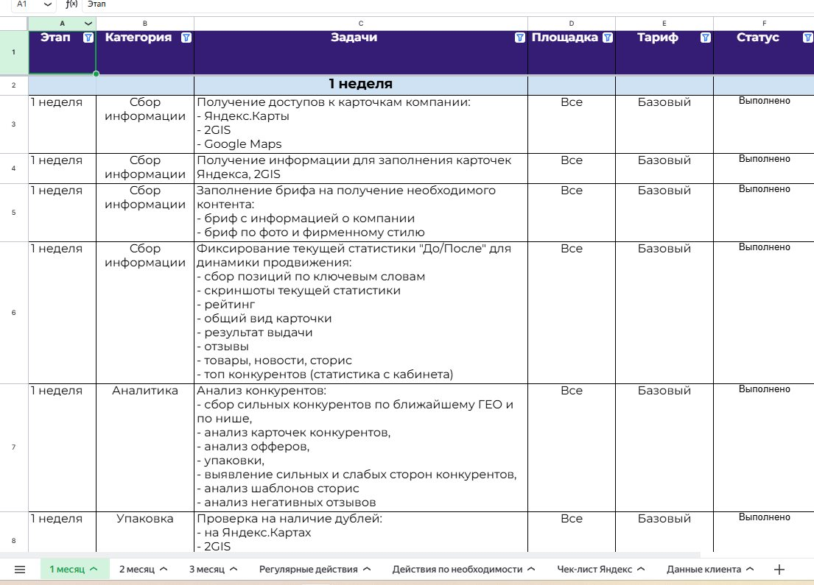
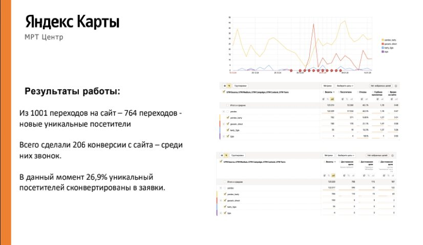

360-DIGITAL · Кейс · медицина
Кейс агентства геомаркетинга: МРТ-клиника на Яндекс Картах
Задача
Упаковать продвижение МРТ-клиники в Яндекс Картах в кейс, который продаёт услугу агентства.
Сделала
История «точка А → что сделали → точка Б»: аудит, упаковка карточки, отзывы, реклама, SERM. Цифры — в таблицы и списки, скриншоты — с подписями.
Итог
Рейтинг 4,1 → 4,9, звонки 27 → 322 в месяц, заявка — 129 ₽.
Как мы снизили стоимость заявки до 129 рублей для МРТ-клиники в Москве и вывели карточку в ТОП Яндекс.Карт
Кейс: 500+ обращений в месяц с Яндекс.Карт, 2ГИС и Google Maps за 7 месяцев работы
-
Ниша: Медицина / Диагностика (МРТ)
-
Гео: Москва
-
Период работы: март 2024 — октябрь 2024
-
Каналы: Яндекс.Карты, 2ГИС, Google Maps
Проблема клиента
В марте 2024 года к нам обратилась московская МРТ-клиника с типичной для медицинского бизнеса проблемой: низкий поток клиентов с геосервисов и слабая узнаваемость бренда.
Клиника понимала, что Яндекс.Карты — это мощный канал привлечения «тёплых» клиентов, которые уже ищут услугу в своём районе. Но как правильно работать с этим каналом — не знали.
Точка А: С чего начинали
Когда мы провели первичный аудит карточки клиники, картина была следующей:
| Показатель | Значение на старте |
|---|---|
| Рейтинг | 4.1 ⭐ |
| Звонки в месяц | 27 |
| Построенные маршруты | 22 |
| Переходы на сайт | 26 |
| Общее количество обращений | ~75/мес |
| Стоимость заявки | Не отслеживалась |

Что мы выявили при аудите
Главные проблемы:
-
Рейтинг 4.1 отпугивал потенциальных пациентов. При выборе медицинской клиники люди крайне внимательны к отзывам. Рейтинг ниже 4.5 не вызывает доверия — пользователи просто листают дальше.
-
Карточка не была оптимизирована под поисковые запросы. В описании отсутствовали ключевые слова, по которым пациенты ищут МРТ в Москве. Карточка просто не показывалась по важным запросам.
-
Отсутствовала системная работа с отзывами. Негативные комментарии висели без ответов, а довольные пациенты не получали напоминаний поделиться мнением.
-
Визуальное оформление не выделяло клинику среди конкурентов. Фотографии были случайными, обложка — стандартной, брендирование отсутствовало.
-
Не использовались все возможности платформы. Раздел «Новости» пустовал, акции не публиковались, товары и услуги не были добавлены.

Наш подход: системная работа, а не «волшебные таблетки»
Мы не верим в быстрые хаки и накрутки. Наш метод — это выстраивание работающей системы, которая даёт стабильный результат месяц за месяцем. Ниже расскажем, что именно сделали.
Этап 1. Аудит и разработка стратегии
На старте выполнили качественный и глубокий анализ.
Провели аудит карточки
Проверили каждый элемент: от названия и категорий до фотографий и отзывов. Выписали все точки роста — получился список из 23 пунктов, которые требовали доработки.
Разработали дорожную карту

Заполнили подробный бриф
Созвонились с клиентом и погрузились в специфику клиники: какие услуги приоритетные, чем отличаются от конкурентов, какие акции готовы запускать.
Проанализировали конкурентов
Изучили 12 ближайших конкурентов: их рейтинги, УТП, рекламные кампании, отзывы. Выяснили, какие запросы они закрывают, а какие — упускают. Нашли незанятые ниши, на которые можно сделать ставку.
Этап 2. Упаковка и SEO-оптимизация
В первый месяц сфокусировались на фундаментальных улучшениях — без них все остальные действия бессмысленны.
Профессиональный дизайн карточки


SEO-оптимизация карточки

Устранение дублей
Обнаружили две устаревшие карточки с неверной информацией. Добились их удаления — они размывали рейтинг и путали пользователей.
Настройка аналитики
Подключили UTM-метки для отслеживания переходов. Настроили цели в Яндекс.Метрике. Теперь видим не просто клики, а реальные конверсии: звонки, заявки, записи на приём.
Результат первого месяца: рост обращений в 2 раза!
Клиент доволен — продолжаем работу.

Этап 3. Масштабирование результата
После успешного старта мы развернули полномасштабную работу по всем направлениям.
Увеличение рейтинга: от 4.1 до 4.9
Рейтинг 4.1 — это почти приговор для медицинской клиники. При выборе между клиникой с рейтингом 4.1 и 4.8 пользователь даже не задумается. Мы поставили задачу поднять рейтинг до 4.8+ без накруток и ботов.
Что сделали:
-
Внедрили систему сбора отзывов. После каждого визита пациент получал SMS или сообщение в мессенджер с просьбой оценить приём. Простая механика, но работает: довольные пациенты охотно делятся впечатлениями, если их вовремя попросить.
Кроме того, на месте администраторы собирали обратную связь у пациентов и просили оставить обратную связь по QR коду (сделали визитки, стилизованный баннер и пирамидку), вероятность прохождения такого отзыва кратно выше. -
Отработали негативные отзывы. На каждый негативный отзыв подготовили развёрнутый ответ от лица клиники. Где возможно — решили проблему и попросили пациента обновить оценку. Часть откровенно ложных отзывов удалось обжаловать и удалить через модерацию Яндекса.
-
Настроили мониторинг. Теперь отслеживаем новые отзывы в реальном времени. Негатив получает ответ в течение 2 часов — это демонстрирует другим пользователям, что клиника заботится о пациентах.

Контент-план и публикации
Раздел «Новости» в карточке Яндекс.Карт — недооценённый инструмент. Большинство компаний его игнорируют. А зря: публикации повышают активность карточки и улучшают позиции в выдаче.
Что сделали:
-
Разработали контент-план на месяц вперёд: акции, полезные материалы про МРТ, новости клиники
-
Публикуем 3-4 поста в месяц регулярно — алгоритм Яндекса любит активные карточки
-
Каждый пост оптимизирован под поисковые запросы — это дополнительный трафик
Запуск рекламной кампании
На третьем месяце, когда карточка была полностью упакована и рейтинг подрос, запустили платное продвижение в Яндекс.Бизнесе.
Особенности нашего подхода к рекламе:
-
Постоянная оптимизация. Не просто «запустили и забыли». Каждую неделю анализируем результаты, корректируем площадки показов, тестируем новые креативы.
-
Геотаргетинг. Настроили показы в радиусе 5 км от клиники — это оптимальная зона охвата для МРТ-центра.
-
Приоритетные услуги. Усилили рекламу по высокомаржинальным направлениям: МРТ головного мозга, МРТ позвоночника, МРТ с контрастом.

Аналитика выдачи по ключевым словам
Мы не гадаем, показывается карточка в поиске или нет. Используем специальный чекер позиций, который ежедневно проверяет видимость по всем целевым запросам.
Если позиция по запросу ниже ТОП-3, принимаем меры:
-
Добавляем товары и услуги с нужными ключевыми словами
-
Публикуем новости по этой теме
-
Зашиваем SEO-данные и геотеги в фотографии конкретной услуги
-
Запрашиваем у клиентов отзывы именно по той услуге, по которой нужно подняться
-
Корректируем описание и добавляем синонимы запросов
За счёт такой системной работы вышли на лидирующие позиции практически по всем целевым запросам. Львиная доля трафика теперь приходит именно из органического поиска — это бесплатные обращения.

Расширение каналов трафика
Яндекс — это огромная экосистема. Помимо Яндекс.Карт, есть масса площадок, где можно получить дополнительный трафик.
Что подключили:
-
2ГИС — второй по популярности геосервис в России. Дублирует охват Яндекс.Карт и приводит дополнительные заявки.
-
Google Maps — да, им пользуются меньше, но это всё равно ощутимый поток. Особенно для тех, кто ищет с iPhone.
-
Медицинские агрегаторы — ПроДокторов, НаПоправку, СберЗдоровье, Zoon. Люди часто ищут МРТ именно там, сравнивая цены и отзывы.

SERM: управление репутацией в интернете
SERM (Search Engine Reputation Management) — это работа с репутацией бренда во всём интернете, а не только на картах. Пациенты перед записью часто гуглят название клиники и читают отзывы на разных площадках.
Что сделали:
-
Зарегистрировали клинику на всех значимых площадках с отзывами
-
Настроили мониторинг упоминаний бренда
-
Начали системно собирать отзывы на всех платформах, не только на Яндекс.Картах
-
Подняли рейтинг на агрегаторах до 4.7+
Масштабирование и аналитика
Принцип простой: усиливаем то, что работает. Если рекламная связка приносит заявки по 100 рублей — увеличиваем бюджет. Если какой-то канал не окупается — перераспределяем средства.
Отслеживанию мы уделяем огромное количество времени. Каждую неделю анализируем:
-
Количество обращений по каждому каналу
-
Стоимость заявки и динамику изменений
-
Позиции в выдаче по ключевым запросам
-
Рейтинг и новые отзывы
-
Данные Яндекс.Метрики: поведение пользователей на сайте
Точка Б: результаты за 7 месяцев
БЕЗ НАКРУТКИ. БЕЗ ПОВЕДЕНЧЕСКИХ ФАКТОРОВ. Только белые методы.

Итоговые показатели:
-
Рейтинг: с 4.1 до 4.9
-
Звонки в месяц: с 27 до 322 (рост в 12 раз)
-
Построенные маршруты: с 22 до 234 (рост в 10 раз)
-
Переходы на сайт: с 26 до 326 (рост в 12 раз)
-
Стоимость заявки: 129 рублей
Углубленная аналитика и впечатляющий результат
Мы не просто «ведём карточку» — мы глубоко погружаемся в аналитику и отслеживаем каждую заявку.
Конверсия 26,9% — покажите нам другой канал с таким результатом!
На текущий момент 26,9% уникальных посетителей карточки конвертируются в целевые действия (звонок, заявка, переход в мессенджер).
Для сравнения средняя конверсия по другим каналам:
-
Контекстная реклама: 3-7%
-
Таргетированная реклама: 1-3%
-
SEO-трафик: 2-5%
Геосервисы дают в 4-10 раз более высокую конверсию!

Прозрачная отчётность
Каждый месяц клиент получает детальный отчёт с разбивкой по каналам. Видно, откуда пришли заявки: Яндекс.Карты, 2ГИС, Google Maps. Видна динамика: растём или нет. Видна стоимость каждого обращения.


Почему геосервисы — это must-have для локального бизнеса
Важно понимать: Яндекс.Карты — это история вдолгую. Это «клиенты завтра» (хотя часто мы получаем результат уже в первый месяц). Но когда карточка «раскачивается» — как SEO-сайт — клиент получает очень дешёвых и качественных клиентов. По сути, это трафик уровня «сарафанного радио» — приходят люди с высоким уровнем доверия.
Преимущества геомаркетинга:
✅ Низкая стоимость заявки — в нашем кейсе 129 рублей
✅ Высокая конверсия — до 27% посетителей становятся клиентами
✅ «Тёплый» трафик — люди уже ищут вашу услугу в вашем районе
✅ Накопительный эффект — результаты растут со временем
✅ Независимость от блокировок — это не таргет в Instagram*
Хотите такие же результаты для своего бизнеса?
Мы проведем бесплатный аудит вашей карточки на Яндекс.Картах и покажем точки роста.
Что вы получите:
-
Анализ текущего состояния карточки
-
Сравнение с конкурентами в вашей нише
-
Конкретные рекомендации по улучшению
-
Прогноз потенциального роста обращений
-
Персональный план продвижения
📩 Оставьте заявку на бесплатный аудит
Заполните форму ниже, и мы свяжемся с вами в течение 24 часов:
[ФОРМА ЗАЯВКИ]
-
Ваше имя: _______________
-
Телефон: _______________
-
Сфера бизнеса: _______________
-
Ссылка на карточку (если есть): _______________
Или напишите нам напрямую:
-
Telegram: @360-digital
-
WhatsApp: +7 (XXX) XXX-XX-XX
© 360-DIGITAL — Агентство геомаркетинга. Выводим локальный бизнес в ТОП Яндекс.Карт.
*Instagram принадлежит компании Meta, признанной экстремистской организацией на территории РФ.